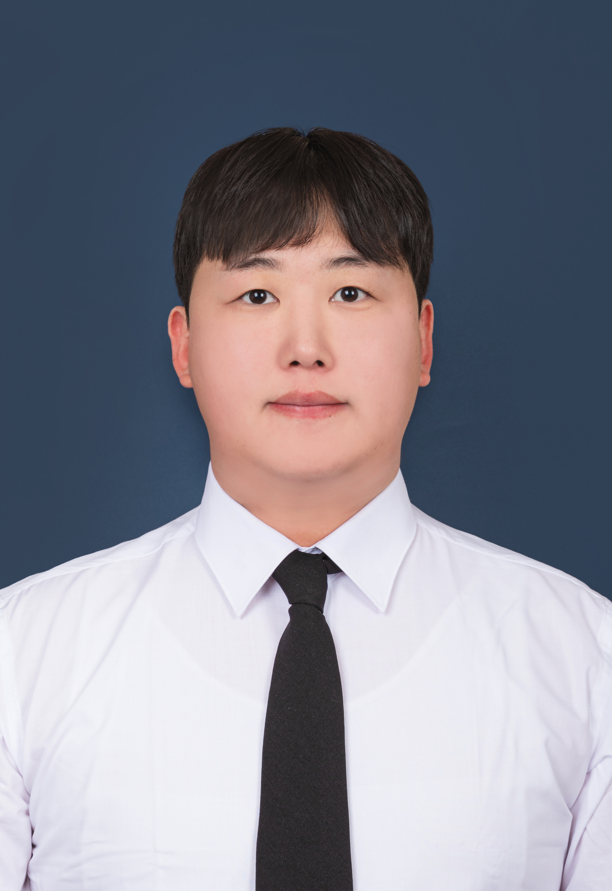

Ph.D. Student | Department of Information Display Kyung Hee University, Seoul
I am a Ph.D. student in the Department of Information Display at Kyung Hee University. My research lies at the intersection of Virtual Reality (VR), Extended Reality (XR), and Human-Computer Interaction (HCI).
My current work focuses on VR motion sickness mitigation using perceptually adaptive peripheral vision display techniques. I design and evaluate display adaptation algorithms such as peripheral brightness modulation and peripheral resolution reduction to reduce cybersickness while maintaining immersion and presence.
Keywords: VR Motion Sickness, Peripheral Vision Modulation, Human Perception Modeling, XR Display Systems